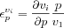

In enzyme kinetics the behavior of isolated enzymes is studied through the dependence of the initial rates of reaction with the concentration of the substrate(s). Enzyme kinetic studies are centered on derivation of rate equations and the determination of their kinetic constants such as Michaelis constants or limiting-rates or even on the elementary rate constants of a specific reaction mechanism.
In metabolic control analysis the properties of each (isolated) enzyme are measured in a way very similar to the flux-control properties: using a sensitivity, known as the elasticity coefficient [
Kacser73 Heinrich74 Burns85]. In this case, one has to consider the effect of perturbations of a reaction parameter on the local reaction rate. By local one means that this sensitivity refers to the isolated reaction which has the same characteristics (effector and enzyme concentrations, temperature, and so on) as in the whole system at the operating point (steady state) of interest. The elasticity coefficients are defined as the ratio of relative change in local rate to the relative change in one parameter (normally the concentration of an effector). Infinitesimally, this is written as:

where
v is the rate of the enzyme in question and
p is the parameter of the perturbation. Each enzyme has as many elasticity coefficients as the number of parameters that affect it. One can immediately recognize the concentration of the reaction substrates, products and modifiers as parameters of the reaction. Unlike control coefficients, elasticity coefficients are not systemic properties but rather measure how isolated enzymes are sensitive to changes in their parameters. The elasticity coefficients can be obtained from the kinetic functions by partial derivation. Again like the control coefficients, the elasticity coefficients are not constants, they are dependent on the value of the relevant parameter and so are different for each Steady-State.